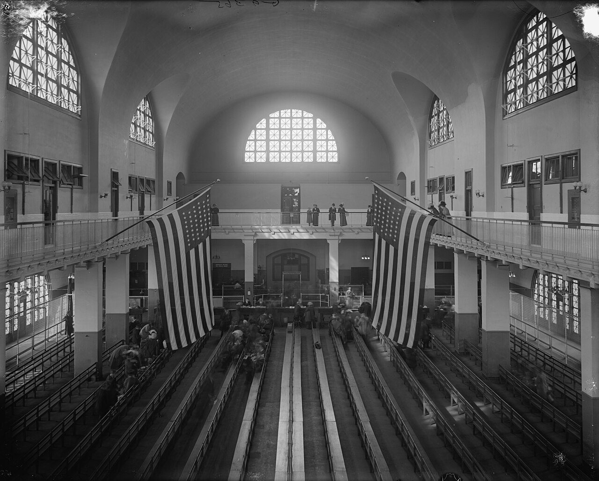
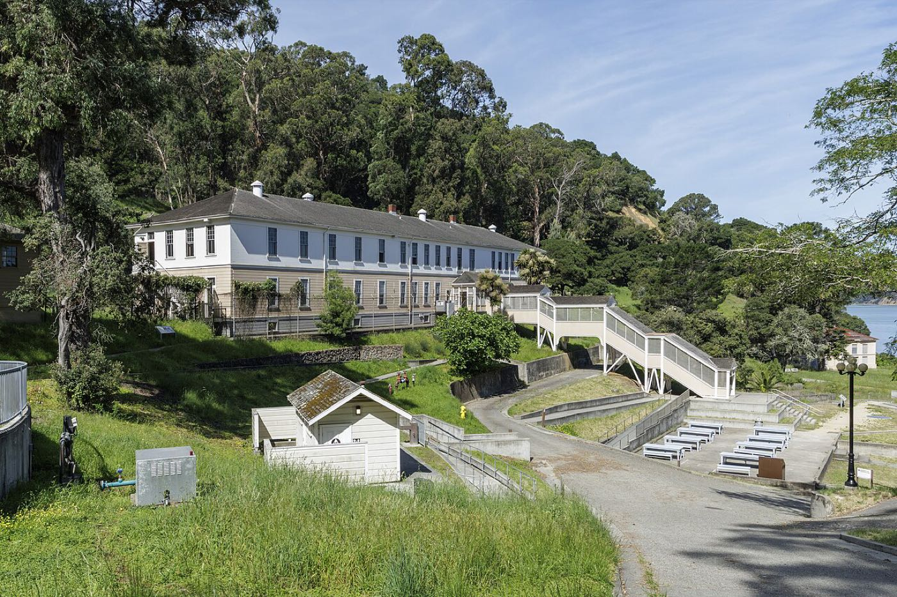
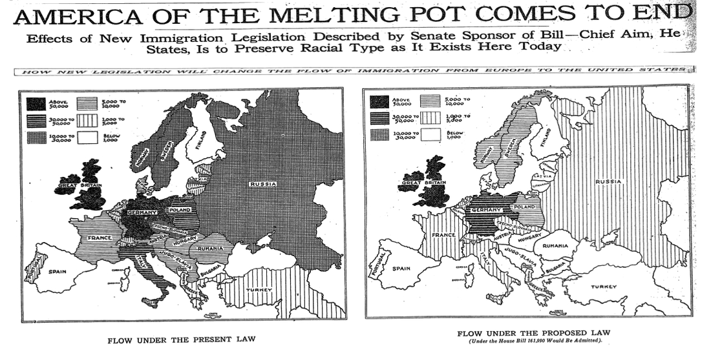
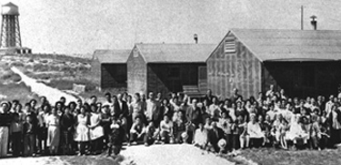
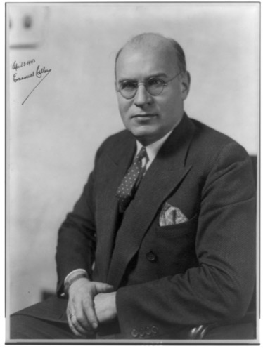

Almost everyone in the United States can trace their family back to somewhere else. Here's the long history behind today's immigration system — and where things stood as of July 2026.
Fiscal year 2025 ran from October 2024 to September 2025. During that year, 1,320,080 people became lawful permanent residents. That means they got a green card. That number is down about 2.7% from the year before, when 1,356,760 people got green cards. DHS
About 177,000 more people got green cards through other paths. These include refugee and asylee status changes, the diversity visa lottery, and other smaller humanitarian categories. Newsweek/DHS
Every year, the government caps the number of green cards for each category and each country. Sometimes more people apply than there are open slots. When that happens, a backlog forms. The U.S. Department of State tracks this backlog every month. It publishes the numbers in something called the Visa Bulletin. Morgan Lewis
Here's one real example. The July 2026 Visa Bulletin covers the EB-3 employment category for people born in India. It was only processing applications filed on or before January 1, 2014. That means someone applying today in that category would wait well over a decade. Morgan Lewis
Wait times vary a lot by category and country of birth. This is one specific, long-backlogged example, not the wait time for every applicant.
Immigration courts are run by the Executive Office for Immigration Review, or EOIR. EOIR is part of the U.S. Department of Justice. It is not part of the regular federal court system. As of June 30, 2026, EOIR had 3,195,137 pending cases. TRAC
Of those cases, 2,310,698 — about 72% — involve people waiting on an asylum claim. They have already filed a formal application. Now they are waiting for a hearing or decision. TRAC
This figure comes from TRAC (Transactional Records Access Clearinghouse), a Syracuse University research center that obtains and publishes EOIR's own case-level data through federal records requests.
ICE's fiscal year 2026 runs from October 2025 through September 2026. As of July 21, 2026, ICE reported 356,389 removals so far this fiscal year. ICE also reported a detained population of 65,765 people in its custody. ABC News/ICE
These are ICE's own published enforcement totals. They are plain counts, and nobody disputes them. But there is a different question people do disagree about: who, exactly, is getting arrested along the way?
A DHS spokesperson responded to reporting on arrest data in April 2026. The spokesperson said: "Nationwide, our law enforcement is targeting the worst of the worst criminal illegal aliens — including murderers, rapists, gang members, pedophiles, and terrorists." The spokesperson also stated that "70% of illegal aliens ICE arrested across the country have criminal convictions or pending criminal charges."HuffPost/THE CITY
The American Immigration Council is an immigrant-rights research and advocacy group. It has tracked people with no criminal record among ICE's arrests and detentions. It reports that share rose from 6% in January 2025 to 41% by December 2025. The group says this trend comes from expanded "collateral arrests" — arrests made during operations aimed at other people.American Immigration Council
Both figures describe the same underlying enforcement activity. The two sides disagree on how to describe who is getting caught up in it. This page reports both stated positions rather than picking one.
Before there was a United States, people already lived here. This was true before any ship from Europe ever crossed the Atlantic. Indigenous peoples had been living across North America for thousands of years. They hunted, farmed, and built towns. They also traded across huge networks that stretched from coast to coast. Archaeologists have found tools and artifacts in Virginia alone dating back more than 15,000 years.NPS The first English colonists showed up in the late 1500s and early 1600s. By then, Native nations already had complex societies, governments, and cultures in place. So the story of immigration to America doesn't start with the first immigrant. It starts with the people who were already home.
That's an important thing to keep in mind as you read the rest of this page. European colonists weren't moving into an empty land when they arrived. They were moving into land that belonged to someone else. The Library of Congress puts it plainly: European colonization of North America "was an invasion of territory controlled and settled for centuries by Native Americans."LOC
Starting in the early 1600s, small numbers of Europeans began crossing the Atlantic. They came to build permanent settlements. The English founded Jamestown, Virginia in 1607. They founded Plymouth, Massachusetts in 1620. Around the same time, the French built Quebec. The Dutch set up colonies in what's now New York.LOC Over the next several decades, companies like the Massachusetts Bay Company sent thousands of colonists across the ocean. That included whole families.LOC
Most of these early arrivals came from England. But other European groups came too, in smaller numbers. These included the Dutch, French, Germans, and Scots-Irish. This pattern continued through the colonial period. It lasted into the early years of the new United States: mostly English, with some other Europeans. Nearly all of these people came by choice. They were looking for land, religious freedom, or a fresh start.
Moving to a new country by choice — deciding for yourself to leave one place and settle in another. This is different from being forced to move against your will.
Not everyone who came to the American colonies had a choice. Starting in 1619, enslaved Africans were brought to England's Jamestown colony in chains. That was a year before the Pilgrims even landed at Plymouth.LOC This was the start of what's known as the transatlantic slave trade. European traders kidnapped and purchased African people. They packed them onto ships and transported them across the Atlantic Ocean to be enslaved. This was forced migration, not immigration. People did not choose to come, and once they arrived, they were not free.
The scale of this forced migration was enormous. Historians estimate that more than 10 million people were enslaved and transported from Africa to the Americas over the centuries-long span of the slave trade. Of those, several hundred thousand were brought specifically to Britain's American colonies and, later, the United States. An unknown number of people died during the brutal ocean crossing itself — but it was likely more than a million.LOC Slavery would remain legal in the United States for nearly 250 years after that first ship reached Jamestown. The Thirteenth Amendment finally abolished it in 1865.
Historians are careful to point out that the experience of enslaved Africans isn't really a story of "immigration" at all, since immigration describes people choosing to move. It's a separate and distinct history — one of forced removal, captivity, and survival.LOC
This page covers two very different histories side by side. One is about people choosing to cross an ocean for a new life. The other is about people being forced across it against their will. Understanding both is essential to understanding how the United States became a "nation of immigrants" in the first place.
Starting in the 1840s, immigration to the United States changed completely. Instead of a slow trickle of newcomers, huge waves of people began arriving. First came Ireland and Germany. Later, immigrants came from all over Europe and Asia. Two famous places tell this story best: Ellis Island in New York Harbor and Angel Island in San Francisco Bay. Both processed millions of immigrants. But they treated the people who passed through them very differently.
In 1845, a disease began destroying Ireland's potato crop. Most Irish families depended on potatoes for food. The crop failed again and again for years. More than 750,000 people in Ireland starved to death.USHistory.org They were desperate to survive. Over two million Irish people left for the United States during and after this famine.USHistory.org Most arrived with almost no money. They settled in crowded East Coast cities, where they took factory and labor jobs.
Around the same time, more than a million Germans immigrated to the United States between 1845 and 1855.USHistory.org Their reasons were different from the Irish. Germany was going through economic hard times and political conflict, including a failed revolution in 1848. Many German immigrants arrived with more money than Irish immigrants did. That money let them buy farmland in the Midwest instead of settling only in cities.
An extreme, widespread shortage of food that causes severe hunger and death. The Irish Potato Famine of the 1840s is one of the most well-known famines in history.

Immigration from Europe kept growing. So the U.S. government opened a new processing station in New York Harbor. Ellis Island operated from 1892 to 1954. It became the busiest immigration station in the country.NPS More than 12 million immigrants passed through its halls. Most of them came from European countries like Italy, Russia, Poland, and Greece.Statue of Liberty–Ellis Island Foundation
For most people, Ellis Island meant a health check and a few questions. Most were free within a few hours to start their new lives. Historians estimate that a large majority of arriving immigrants passed through in under a day. Today, roughly 40% of all Americans can trace at least one ancestor back through Ellis Island.Statue of Liberty–Ellis Island Foundation
Ellis Island wasn't the only entry point, and it wasn't built to keep people out. It was built to process huge numbers of European arrivals quickly. Angel Island, on the other side of the country, worked very differently — as the next section explains.

Ellis Island welcomed European immigrants. But a different immigration station opened on Angel Island in San Francisco Bay. It operated from 1910 to 1940. It became the main entry point for immigrants arriving from Asia, especially China.Angel Island Immigration Station Foundation
Angel Island was not designed to welcome newcomers quickly the way Ellis Island was. It was built to detain and question them.Angel Island Immigration Station Foundation Chinese immigrants in particular faced long interrogations. Many were held for weeks, months, or even years while officials decided whether to let them in. This harsh treatment was not an accident. It was the result of a law passed decades earlier.
In 1882, Congress passed the Chinese Exclusion Act. It banned Chinese laborers from immigrating to the United States for ten years. It also required Chinese people already living in the country to carry special identification papers.National Archives The National Archives describes it as the first major U.S. law to restrict immigration based on someone's nationality.National Archives The U.S. State Department's official historians describe it the same way. They call it the first law in American history to place broad restrictions on immigration.State Department, Office of the Historian
This law was exclusionary and discriminatory. It targeted people specifically because of their nationality and ethnicity, not because of anything they had done. Congress kept extending it. The Geary Act of 1892 renewed the exclusion for another ten years. In 1902, lawmakers made Chinese exclusion permanent. They also expanded it to Hawaii and the Philippines.State Department, Office of the Historian These exclusion laws stayed in effect for 61 years, until Congress repealed them in 1943. By then, the broader pattern of restricting immigration by nationality had already expanded far beyond Chinese immigrants, as the next section explains.
In 1924, Congress didn't just restrict one nationality — it rewrote the rules for almost everyone. A new law created strict numerical limits on immigration, based on where a person came from. It replaced the older, narrower exclusion laws with a much bigger system. That system was built around a mathematical formula. The formula wasn't neutral. It was calculated specifically to favor some countries and shut out others.

In 1924, Congress passed the Immigration Act of 1924. It's also known as the Johnson-Reed Act. It set a strict yearly limit on immigration. It divided that limit into quotas — a fixed number of visas — for each country.State Department, Office of the Historian Each country's quota was based on how many people from that country already lived in the United States, according to the 1890 census.State Department, Office of the Historian
Choosing the 1890 census was not an accident. Most Southern and Eastern European immigrants arrived in the U.S. after 1890. That group included Italians, Greeks, Poles, Russians, and others. Using that earlier year meant their communities barely counted toward the new quotas. The State Department's official historians describe the result plainly: visas for "the British Isles and Western Europe increased." Meanwhile, "newer immigration from other areas like Southern and Eastern Europe was limited."State Department, Office of the Historian
A limit on immigration that sets a specific number of visas for people from each country, based on nationality rather than any individual's skills or story.
This wasn't a side effect of the law. Favoring Northern and Western Europe was the goal. The State Department's Office of the Historian states plainly that "the most basic purpose of the 1924 Immigration Act was to preserve the ideal of U.S. homogeneity."State Department, Office of the Historian The National Archives agrees. It describes the same law as one that "barred Asian immigrants, limited Latin American immigrants, and established rigid immigration quotas for European countries."National Archives Those quotas favored countries like Germany and Great Britain. They favored those countries over ones like Estonia or Latvia.
This is documented historical fact, not one side of a debate. Government sources use direct language here. The law aimed to "preserve" one specific ethnic makeup of the country. Its formula was built to favor some nationalities and restrict others.
The 1924 Act went even further than restricting Southern and Eastern Europe. It excluded people from Asia almost entirely. The law barred "any alien who by virtue of race or nationality was ineligible for citizenship". That rule blocked immigration from Japan and the rest of Asia.State Department, Office of the Historian The older Chinese Exclusion Act was still in effect too. Combined, the two laws meant that by the mid-1920s, almost no legal path to the U.S. existed for people from Asia.
The national-origins quota system didn't fade away quickly. According to the National Archives, these quotas "lasted from 1924 through 1965." That's more than forty years shaping who could come to America.National Archives Lawmakers adjusted parts of the system over the decades. But the basic idea stayed firmly in place: a strict quota favoring some nationalities over others.
That finally changed in 1965. Congress passed a sweeping new law that year. It abolished the national-origins quota system for good. What replaced it, and why, is the subject of the next section.
For more than forty years, a person's country of birth decided almost everything about their chances of immigrating to the United States. The national-origins quota system from the last section had favored Northern and Western Europe. It had nearly shut out Asia entirely. In 1965, Congress finally tore that formula out and replaced it. What lawmakers built in its place is still, in its basic shape, the system the United States uses today.
On October 3, 1965, President Lyndon B. Johnson signed the Immigration and Nationality Act of 1965. He signed it at the base of the Statue of Liberty.National Archives The law is commonly known as the Hart-Celler Act. It's named after its two main sponsors in Congress: Senator Philip Hart and Representative Emanuel Celler.National Archives, DocsTeach
The law's first job was to get rid of the old system. The National Archives says the old quotas had "barred Asian immigrants, limited Latin American immigrants, and established rigid immigration quotas for European countries." The 1965 Act eliminated all of that.National Archives After 1965, a person's nationality no longer decided whether they could come to America.
A way of ranking immigration applicants using categories like family ties or job skills, instead of using a country-by-country quota.
In place of the quotas, the 1965 Act built a preference system. The National Archives explains that it prioritized two things: keeping families together and admitting workers with needed skills.National Archives Close relatives of U.S. citizens could now immigrate without being counted against any numerical limit at all. This group includes spouses, children, and parents.National Archives, DocsTeach Beyond those immediate relatives, the law set up ranked categories. Those categories covered other family members and workers with skills the country needed.
This wasn't a small adjustment. It was a complete change in the basic question the government asked. The old system asked, "Where were you born?" The new system asked, "Do you have close family here, or skills this country needs?"
The 1965 Act didn't just matter in its own moment. Its family-and-employment framework is still recognizably the basis of U.S. immigration law today. Researchers who study immigration policy have looked at today's family-based and employment-based visa categories. They describe those categories as growing directly out of the preference system Congress created in 1965.Migration Policy Institute The details have changed over the decades. But the core structure has not.
The next section explains how that system actually works today. It covers how family and employment categories function. It also covers what paths exist for someone hoping to immigrate to the United States now.
The 1965 Act's basic idea is still how U.S. immigration law works today: family ties and job skills instead of national origin. But "how it works" covers a lot of ground. It includes green cards, citizenship, asylum, refugees, and government agencies with confusing initials. This section walks through the major pieces, using the U.S. government's own official explanations of each one.
Before getting into the process, it helps to see the overall scale of who this system covers. Pew Research Center studied Census Bureau survey data as of June 2025. Here is what it found.Pew Research Center
A green card makes someone a lawful permanent resident. That means they can live and work in the United States permanently, without being a citizen. U.S. Citizenship and Immigration Services (USCIS) is the federal agency that runs the legal immigration system. It grants most green cards through one of two main paths: family or employment.USCIS
On the family side, USCIS splits applicants into two groups. Immediate relatives of U.S. citizens face no yearly limit on how many green cards can be issued. This group includes spouses, unmarried children under 21, and parents.USCIS Everyone else with a qualifying family relationship falls into a family preference category, ranked F1 through F4. This covers relatives like adult children or siblings of citizens. USCIS caps how many preference green cards it issues each year. So people in these categories often wait years for their turn.USCIS
On the employment side, USCIS uses five ranked preference categories, called EB-1 through EB-5. Here's what each one covers, in USCIS's own terms:USCIS
About 140,000 employment-based green cards are available each year.USCIS
The common nickname for a Permanent Resident Card. It shows that someone has lawful permanent resident status — the right to live and work in the U.S. permanently, one step short of citizenship.
A green card holder can eventually apply to become a U.S. citizen. This process is called naturalization. USCIS lays out the general eligibility rules on its own naturalization pages. In most cases, an applicant must have held a green card for at least five years before applying. That drops to three years if they are married to a U.S. citizen.USCIS
During that time, USCIS checks two related things. First, the applicant needs continuous residence. That means the U.S. stayed their real home the whole time, without long absences that break that continuity.USCIS The applicant also needs physical presence. That means they actually spent at least half that time physically inside the United States. That's at least 30 months out of the standard five years.USCIS
Applicants must also pass an interview. It includes an English test and a civics test about U.S. history and government. Applicants also take an Oath of Allegiance. They must meet USCIS's standards of "good moral character."USCIS Only after all of that is an applicant sworn in as a citizen at a naturalization ceremony.
Naturalization isn't quick. Between the years of required residence and the paperwork, interview, and testing involved, becoming a U.S. citizen through this process is a multi-year commitment, not a one-time application.
People fleeing danger in their home country sometimes seek protection in the United States through refugee or asylum status. Both use the exact same legal definition. That definition covers someone who has been persecuted, or has a well-founded fear of future persecution, based on their race, religion, nationality, social group, or political opinion.USCIS
What separates the two statuses, according to USCIS, is location at the time of application. Refugee status can be granted only to people who are still outside the United States when they apply. Asylum status can be granted only to people who are already physically present in the United States or arriving at a U.S. port of entry when they apply.USCIS Same legal standard, different location. That's the core distinction.
Serious mistreatment or harm directed at someone because of who they are — their race, religion, nationality, social group, or political beliefs. Fear of persecution is the legal basis for both refugee and asylum status.
ICE stands for U.S. Immigration and Customs Enforcement. It is a federal law enforcement agency inside the Department of Homeland Security (DHS).ICE
ICE traces back to the reorganization of the federal government after the September 11, 2001 terrorist attacks. Congress passed the Homeland Security Act in November 2002. DHS formally opened as a new Cabinet-level department on March 1, 2003. It combined pieces of 22 different existing federal agencies.DHS ICE itself was created in 2003 as part of that reorganization. It formed by merging investigative and enforcement units from the former U.S. Customs Service with the former Immigration and Naturalization Service.ICE
ICE's legal authority is enforcing immigration and customs law within U.S. borders. For example, it identifies, arrests, detains, and removes people who are in the country in violation of immigration law.ICE This is a different agency, with a different job, from U.S. Customs and Border Protection (CBP). CBP describes its own mission as securing official ports of entry and the border itself. It screens travelers and cargo as they arrive in the country.CBP In short: CBP's job is mainly at the border and points of entry. ICE's job is mainly enforcement inside the country's interior.
The federal department created in 2003, after the September 11 attacks, to coordinate the country's efforts against terrorism and other security threats. ICE and CBP are both agencies within DHS.
This page covers the ongoing, current-events side of immigration enforcement — including ICE's activities — in the "Where Things Stand" update section below.
Washington State's history isn't separate from the story told above — it's a local chapter of the exact same story. Scandinavian farmers and fishermen came here. A thriving Japanese American community was torn apart by a wartime order. Refugees rebuilt their lives here after a war on the other side of the world. All of it happened right here, in Seattle and the towns around Puget Sound.
Railroads finally connected the Pacific Northwest to the rest of the country starting in the 1880s. Norwegian, Swedish, Danish, and other Scandinavian immigrants began arriving in noticeable numbers around that time.HistoryLink.org By 1910, Scandinavians were the largest foreign-born ethnic group in the entire state. They made up more than 20 percent of Washington's foreign-born population — and in Seattle itself, nearly a third.HistoryLink.org
What drew them here was familiarity. The Puget Sound region's saltwater, forests, and mountains reminded Scandinavian immigrants of home. The region also offered work they already knew how to do.HistoryLink.org Norwegians in particular became central to the region's fishing industry. They eventually came to dominate the cod, halibut, and salmon fisheries. By 1908, Scandinavians made up roughly 40 percent of the Pacific Coast and Alaska Fisherman's Union.HistoryLink.org Others worked as loggers, farmers, and boat builders. Seattle's Ballard neighborhood became so closely associated with Scandinavian settlement that it's still known for its Nordic heritage today.HistoryLink.org
A neighborhood or community where immigrants from a particular country or region settle close together, often building shops, churches, and organizations connected to their shared heritage. Ballard was an ethnic enclave for Seattle's Scandinavian immigrants.
Long before World War II, Seattle had a thriving Japanese American community. It numbered around 7,000 people, centered in what's now the city's International District.Densho Encyclopedia That changed abruptly in 1942. On February 19, 1942, President Franklin D. Roosevelt signed Executive Order 9066. This order authorized the military to force people out of designated areas. (An executive order is a directive from the president that carries the force of law, without a vote in Congress.)National Archives The order never named Japanese Americans directly. But it was used to forcibly remove and incarcerate roughly 120,000 Japanese Americans living on the West Coast. Nearly 70,000 of them were U.S. citizens by birth.National Archives
This is settled historical fact, documented by the U.S. government's own National Archives: American citizens, guilty of no crime, were forced from their homes and imprisoned because of their ethnicity. The government brought no charges against them and gave them no chance to appeal.National Archives
In April 1942, Seattle's Japanese American residents were sent by train to a temporary detention site. Most of them were U.S. citizens. That site, at the Puyallup fairgrounds, was known as "Camp Harmony." From there, they were transferred to the Minidoka incarceration camp in the Idaho desert, roughly 800 miles from home.Densho Encyclopedia Over 13,000 people were incarcerated at Minidoka in total, most of them from Seattle and Portland, Oregon. They stayed there behind barbed wire and guard towers until the war's end.Densho Encyclopedia

A prison camp where people were confined without trial. Historians and organizations like Densho use "incarceration camp" rather than the government's softer wartime term "relocation center" because it more accurately describes what these places were.
Seattle's history also includes welcoming refugees fleeing war and persecution. The Vietnam War ended in April 1975. After that, tens of thousands of Vietnamese, Cambodian, Laotian, and Hmong refugees were resettled across the United States.Asian American Education Project Washington's governor at the time, Dan Evans, invited refugees being processed in California to relocate to Washington. The state converted the Camp Murray military base into a resettlement site. It housed 500 to 600 Vietnamese refugees over several months in 1975.Asian American Education Project
Many of the refugees who resettled in the Seattle area built new communities and businesses. This included businesses in Seattle's Chinatown-International District. That wave of resettlement was followed by decades more arrivals. Today, Washington is home to some of the largest Vietnamese, Cambodian, and Laotian American communities in the country.Asian American Education Project
Three very different stories — voluntary immigration for work and opportunity, forced removal and incarceration, and refugee resettlement after war — all shaped the Seattle area within about a hundred years of each other. Washington's immigration history contains the same range of experiences as the national story.
Every date on this page came from somewhere. Here's the whole story, in order — the same facts from the sections above, laid out on one timeline.
English colonists founded Jamestown, Virginia in 1607 and Plymouth, Massachusetts in 1620. This was the start of a mostly-English, some-other-European pattern of voluntary immigration into land already inhabited by Native nations.
→ Library of Congress: Colonial Settlement, 1600–1763Enslaved Africans were first brought to England's Jamestown colony in chains, a year before the Pilgrims landed at Plymouth. This was forced migration, not immigration. People did not choose to come, and once they arrived, they were not free.
→ Library of Congress: Beginnings of the Slave TradeIreland's potato famine began in 1845. It drove more than two million Irish immigrants to the U.S. At the same time, more than a million Germans arrived between 1845 and 1855, fleeing economic hardship and political conflict.
→ USHistory.org: Emigration and ImmigrationCongress banned Chinese laborers from immigrating for ten years. It also required Chinese residents to carry identification papers. This was the first major U.S. law to restrict immigration based on nationality. It stayed in effect, in various renewed forms, for 61 years.
→ National Archives: Chinese Exclusion ActThe new immigration station in New York Harbor became the busiest in the country. It processed more than 12 million immigrants, most from Europe, before it closed in 1954. Today, roughly 40% of Americans can trace an ancestor through it.
→ National Park Service: History of Ellis IslandOn the other side of the country, a very different immigration station opened in San Francisco Bay. Angel Island became the main entry point for immigrants from Asia, especially China. It was built to detain and interrogate them rather than process them quickly. It operated until 1940.
Poetry on the walls: Immigrants detained at Angel Island were sometimes held for weeks, months, or even years. While they waited, they carved poems into the wooden walls of the barracks. Over 200 of these poems have since been documented, recorded, and translated. They give historians a rare direct record of what detention there actually felt like. src
Congress replaced the older exclusion laws with a national-origins quota system. It was calculated using the 1890 census, specifically to favor Northern and Western Europe. It excluded almost all immigration from Asia and lasted more than forty years.
→ State Department, Office of the Historian: The Immigration Act of 1924
President Lyndon B. Johnson signed the law at the base of the Statue of Liberty. It abolished the national-origins quota system. In its place, it created a preference system based on family ties and job skills — still the basic framework of U.S. immigration law today.
→ National Archives: The Immigration Act of 1965This section sticks to historical figures whose part in the story is already settled. It does not include anyone currently holding office or active in public life today.
He was born Israel Beilin in the Russian Empire. He arrived at Ellis Island in 1893 at age five with his family, one of eight children. He grew up on New York's Lower East Side. He went on to write roughly 1,500 songs, including "God Bless America" and "White Christmas". That made him one of the most successful songwriters in American history. His story is one the National Park Service itself lists among Ellis Island's notable immigrants.
Celler represented Brooklyn in the House for exactly fifty years. He had pushed for immigration reform since the 1920s. As chairman of the House Judiciary Committee, he co-sponsored the Immigration and Nationality Act of 1965 with Senator Philip Hart. The law is still commonly known as the Hart-Celler Act. He also helped guide the Voting Rights Act and the 24th Amendment through Congress that same decade.
Sometimes a video explains things better than words. Both of these focus on history you've already read about above. You can pause, rewind, or watch with captions on.
Crash Course US History walks through the massive European and Asian immigration of the late 1800s and early 1900s. It covers Ellis Island, Angel Island, and the backlash that followed.
A TED-Ed animation, narrated by law professor Robert Chang, on how the 1882 law worked and the lasting impact it had on Chinese immigrants' rights.
What surprised you? What questions do you still have? What do the videos say that matches — or doesn't match — what you read on this page?
⭐ Easier = great starting point · ⭐⭐ Medium = some reading required · ⭐⭐⭐ Harder = for students who want a deeper challenge
The federal government's own explanation of the family and employment paths to a green card.
History, photos, and notable-immigrant stories from the busiest immigration station in U.S. history.
The nonprofit that preserves the immigration station and its poetry-carved barracks walls.
The official historical account of the national-origins quota system and why it was built the way it was.
How the Hart-Celler Act replaced the quota system and reshaped who could come to America.
A nonpartisan think tank's full country profile — history, data, and how the modern system actually works.
Immigration policy is one of the fastest-moving topics in the news. This short list will get stale. If you're reading this well after July 2026, treat these links as historical background. Look for newer coverage instead.
Published February 2, 2026. A nonpartisan fact tank's look at the historical data behind a major recent shift in border crossings, covering policy changes under both the Biden and Trump administrations.
Published February 25, 2026. A wire-service look at six key immigration-enforcement indicators — arrests, detention, spending, and asylum outcomes — using government and independent data.
Published March 12, 2026. An annually updated, nonpartisan statistical snapshot — population size, legal status breakdown, and a factual summary of major policy changes since January 2025.